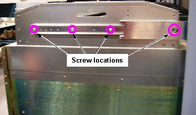

Illustration 12:
Slide Rail Screw Locations

NOTE:
One screw on each side is accessible through a hole in the slide rail. If necessary, you can remove the right side cabinet door for better access to the screw on that side.